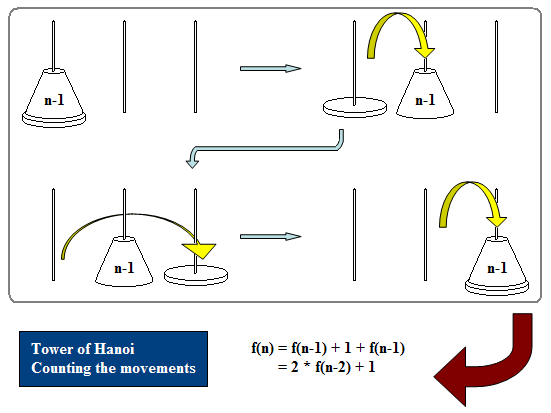

Divide and Conquer
程度★ 難度★★★
凡治眾如治寡，分數是也。鬥眾如鬥寡，形名是也。《孫子》
Divide and Conquer
「分治法」將一個大問題，分割成許多小問題；將這些小問題解決之後，原本的大問題也就解決了。如果小問題還是很難，那就再切成更小的問題就行了。分割問題、各個擊破，就是Divide and Conquer的精神。
Divide and Conquer著重分割問題的方式──要怎麼分割大問題，使這些小問題簡單又好算？各位可以藉由本文中的範例，體會分割問題的方式。
範例：分解動作
假設今天要學習「從中場帶球上籃」，我們可以將此動作分割為「跑步運球」、「跑步收球」、「單手將球放入籃框」等動作，並且分別學習。當每一項都熟練之後，組合起來便是帶球上籃了。
如果覺得「跑步運球」還是太難，可以更細分成「原地運球」、「走動運球」、「運球時護球」等動作，克服了之後便能夠順利解決「跑步運球」的問題了。
分割問題──談談Subproblem
中文譯作「子問題」。一個問題被分割之後而成的小問題們，稱做子問題。解決一個問題，就等價於解決其所有子問題。
UVa 11038
範例：方格法求面積
左邊為原問題，右邊放大並細分的圖是其中一個子問題。
範例：分類數數
左邊最大的框框是原問題，將原問題的數字進行分類後再統計，分類後的每一個框框都是一個子問題。
為什麼分割問題之後，就容易計算答案呢？其實是因為分割問題的同時，也分類了這個問題的所有可能答案。分類會使得答案的規則變得單純、明白，於是更容易求得答案。
遞迴地分割問題──談談Recursive Method
如果問題實在太龐大、太複雜，我們只好反覆的分割問題，直到能釐清細節為止。這種情況下的Divide and Conquer其實也是Recursive Method。
我們可以將遞迴分割問題的過程，以樹狀圖來表示之：
UVa 620 10101 10144 10998
範例：L形磁磚（Tiling Problem with L-shaped Tile）
有一個邊長為2的3次方的正方形，右上角缺了一角邊長為1的正方形。現在要以L形磁磚貼滿這個缺了一角的正方形，該如何貼呢？
我們巧妙的將一塊L形磁磚放在中央的位置，就順利的把正方形切成四個比較小的、亦缺了一角的正方形。接下來只要遞迴地處理四個小正方形，就解決問題了。
這個問題也可以改成缺口在任意一處，各位可以想想看怎麼解。
UVa 10230
遞迴地分割問題──談談實作程式碼
如果分割出的小問題，和原問題類似，就可以利用遞迴，簡簡單單地設計出程式碼。利用遞迴，寫一段乾淨俐落的程式碼，明快的解決掉問題，是Divide and Conquer的一大特色。
先將大問題分割成許多小問題（Divide）。然後再遞迴呼叫函式，求得小問題的解（Conquer）。最後用小問題的答案，算出大問題的答案（Merge）。這就是遞迴分割問題、解決問題的流程。
範例：十分逼近法
於Divide階段，把數線分割成十等份區間；於Conquer階段，找出哪個區間是正確區間，把求得的小數位數加到答案末端，並繼續從事十分逼近法；於Merge階段，不作任何事。
與十分逼進法類似的Bisection Method，以及Binary Search，都是Divide and Conquer的經典例子。
範例：合併排序法（Merge Sort）
於Divide階段，把資料分割成兩堆；於Conquer階段，兩堆資料各自從事Merge Sort；於Merge階段，把兩堆排序過的資料，整理成一堆。
遞迴地分割問題，關係總是一致時──談談Recurrence
遞迴分割問題的過程當中，當各層的問題與其子問題之間，其關係都一致時，我們稱此現象為「recurrence」，再度出現、或者是一再重複出現之意。
此時我們可以將每個問題與子問題之間的關係，寫成一道固定的數學公式，用來描述此關係。這個數學公式便是「遞迴公式（recurrence formula）」，該關係則稱作「遞迴關係（recurrence relation）」。
我們可利用遞迴公式，由下至上一層一層釐清答案：以子子問題的答案，求出子問題的答案；再以子問題的答案，求出原問題的答案。
換句話說，一個問題只要找到了遞迴公式，便可以解決問題。再換句話說，找出問題的recurrence，也是一種解決問題的方法！
然而許多問題的recurrence經常是難以發現的。有句話：「To iterate is human, to recurse is divine.」就說明了recurrence並不是常人能夠發覺到的，都是經年累月累積，靠著智慧和靈感，才發現得到的。
註：recurrence的中文翻譯為「遞迴」，與recursion的中文翻譯「遞迴」正好重疊，但是兩者概念並不同。個人認為recurrence的中文翻譯過於粗糙，顯然辭不達意。
範例：爬樓梯（Stairs Climbing）
眼前有五階樓梯，每次可踏上一階或踏上兩階，那麼爬完五階共有幾種踏法？例如(1,1,1,1,1)是其中一種踏法，(1,2,1,1)是另一種不同的踏法。
從最後一步開始分析。最後一步是踏上第五階，踏上第五階只可能從第四階和第三階踏過去，所以可將「爬完五階」分為兩個子問題：「爬完四階」與「爬完三階」。另外藉由排列組合的加法原理，我們得知原問題與子問題之間的關係為：「爬完五階」的踏法總類數，是總合「爬完四階」與「爬完三階」的踏法種類數。
以數學式子表示此關係，便是「f(5) = f(4) + f(3)」這道數學式子，其中數學符號「f(‧)」是表示「踏完某階之踏法種類數」。依樣畫葫蘆，我們也可以推導出「f(4) = f(3) + f(2)」、「f(3) = f(2) + f(1)」等數學式子。
另外，「爬完兩階」與「爬完一階」這兩個問題無法再分割，是沒有子問題的。它們可以直接推導出「f(2) = 2」、「f(1) = 1」等數學式子。
至此，我們可以將這些關係，整理成一道明瞭扼要的遞迴公式。爬到任何一階的踏法種類數，可以藉由這道遞迴公式算得，無一闕漏：
f(n) =
{ 1 , if n = 1
{ 2 , if n = 2
{ f(n-1) + f(n-2) , if n >= 3 and n <= 5
另外，也可由踏出的第一步開始分析，便得到「f(0) = f(1) + f(2)」這道式子。由此概念可設計另一道遞迴公式：
f(5-n) =
{ f(n+1) + f(n+2) , if n >= 0 and n <= 2
{ 2 , if n = 3
{ 1 , if n = 4
儘管前後兩道遞迴公式不太相同，但是他們其實都具有一樣的功效，要用哪一道都可以。一個問題的遞迴關係是固定的，然而一個問題的遞迴公式不見得只有一種寫法。
範例：不重複組合（Combination）
從N個人抓M個人出來組團，到底有幾種不同的組合呢？
分割問題的方式很簡單。N個人當中的其中一個人，叫做甲君好了，我們可將原問題分割成兩種情形：甲君在團中、甲君不在團中。
甲君在團中，就演變成剩下N-1個人要再抓M-1個人出來組團。 甲君不在團中，就演變成剩下N-1個人仍要抓M個人出來組團。
根據排列組合的加法原理，我們得知原問題與子問題之間的關係為：將兩個子問題的答案相加，就可以得到原問題的答案。我們可以將此關係寫成一道遞迴公式，其實它就是著名的巴斯卡公式（Pascal's Formula）：
c(n, m) =
{ c(n-1, m-1) + c(n-1, m) , if n > 1 and m > 1 and n >= m
{ n , if m = 1
{ 1 , if n = 1
Prune and Search
程度★ 難度★★
Prune and Search
「修剪搜尋法」可以視作Divide and Conquer的特例。一個問題被分割成許多子問題之後，如果只有其中幾個子問題是重要的，而其他子問題是沒有必要計算的，此時就稱做Prune and Search。意思是修剪不重要的子問題，只搜尋有用的子問題。
UVa 920
範例：二分搜尋法（Binary Search）
這是在已排序陣列裡面搜尋數值的方法。把陣列等分成兩半，成為小的一邊與大的一邊，這兩邊一定有一邊不是我們所要的，可以去除。於是我們只需要繼續尋找其中一邊。
UVa 10077
範例：從陣列當中，找出第k大的數
跟二分搜尋法的概念很像。首先利用Quicksort的分割方式，把陣列粗分為小的一邊與大的一邊，這兩邊一定有一邊不是我們所要的，可以去除。於是我們只需要繼續尋找其中一邊。
Counterfeit Coin Problem
程度★ 難度★
Counterfeit Coin Problem
現在有一堆硬幣，當中有一枚硬幣是重量與真幣不同的假幣，肉眼無法分辨差異。手邊的工具僅有一台天平，但沒有砝碼，該如何藉由天平來判斷假幣？
當硬幣總數為一時，那麼該幣就是假幣。當硬幣總數為二時，那麼就無解了。當硬幣總數為三以上時，一定都有辦法找出假幣，不過得想個有效率的方法才行。
另外，這個問題中文稱作「秤球問題」，只不過把硬幣換成球而已。
一個簡單的方法（Incremental Method）
把兩枚硬幣個別放在天平兩端秤，當發現天平平衡，表示這兩枚硬幣都是真幣；天平傾斜，表示這兩枚硬幣當中有一枚是假幣，其他硬幣都是真幣，只要再拿這兩枚硬幣的其中一枚，與一枚真幣再秤一次，就知道誰是假幣了。
把所有硬幣逐次取兩枚出來秤，直到發現天平傾斜，此時再拿一枚真幣來試即可。時間複雜度是O(N)，N為硬幣總數。特例是：若N為奇數，而且天平一直保持平衡，那麼最後一枚硬幣便是假幣。
一個比較好的方法（Divide and Conquer）
方才有個情況是：把兩枚硬幣個別放在天平兩端秤，當發現天平平衡，表示這兩枚硬幣都是真幣。因此，接下來只需要判斷N-2枚硬幣當中哪一枚是假幣──竟把原問題縮小成類似的小問題了！
剩下N-2枚或許太多了一點。如果我們拿多一點硬幣，同時放在天平兩端秤，那麼問題就可以縮小更多了！如果把所有硬幣平均分成三份，然後拿兩份在天平上面秤，如果天平平衡，問題一次便縮小為1/3。
那如果天平不平衡呢？表示天平上的兩份硬幣中必有假幣，問題只縮小為2/3，但是也不錯了。
各位可以研究看看如何分、如何秤可以最快的縮小問題。
其他
上述的方法是目前最常見的方法。各位也可以想想其他方式：例如先把所有硬幣都放在天平上，然後逐枚拿起。
Fast Exponentiation
程度★ 難度★
Fast Exponentiation
問題：算出a的b次方（a^b）。
要解決這個問題，不外乎就是把a乘上b次，就能得到答案。然而使用D&C是更好的解決方案。以7^13來說好了，我們嘗試將它分成這樣：
7^13 = 7^7 * 7^6 7^6 = 7^3 * 7^3 7^3 = 7^2 * 7^1
那麼我們只要知道7^1、7^2、7^3、7^6、7^7五個數字，就可以算出7^13。以這種方法來相乘，不需要乘13次就可以得到答案了。
要怎麼求出7^1、7^2、7^3、7^6、7^7五個數字呢？這不是跟原問題很類似嗎？這都是求a的b次方呀！這樣我們就可以寫一個遞迴程式解決他了！這五個數字也不難算才對：像是7^6、7^3都可以由較小的求得，而7^1不需要計算。
一般來說，我們習慣採用對半分。不能對半的，也儘量對半。像是7^6就分成7^3 * 7^3。7^13則分成相差不多的7^7 * 7^6，而7^7只要用7^6乘個7就出來了。這種分法下，計算出a^b的時間複雜度是O(logb)，以2為底的logb。
為什麼不三等分、四等分呢？當然也可以囉。不過，這些等分方法會讓乘的次數，比二等分來的要多。大家可以自行觀察。
方才都沒有討論負的次方，其實負的次方與正的次方大同小異，各位可以自己算一算！除了a^b次方可以這樣算，其實矩陣的次方也是可以這樣計算的！想想看吧。
最後你可能希望來一段簡單的程式碼。
亦可以將程式碼精簡成迴圈形式。由於實作部份偏離了Divide and Conquer這個主題，所以請各位自行參透吧。:p
這裡有個可愛的練習題。
UVa 374
Tower of Hanoi
程度★ 難度★★
Tower of Hanoi
問題：現在有三根柱子，然後有一疊大小不同的盤子（盤子中間還得打個洞，這樣盤子才都能穿在柱子上）。先把所有的盤子都疊在第一根柱子，大的在下面，小的在上面。問題來了，現在你必須將整疊盤子移到第三根柱子，按照原來的順序排好──但是每一次只能搬動一個盤子到別根柱子，而且大的盤子一定要保持在小的盤子下面。
有了這些聽來龜毛的規則之後，請問要怎麼搬才能解決問題？
這個問題很經典。而且這個問題其實是有典故的。可以上網找找看它的故事，非常有趣。
分割問題的方法
這個問題可以用D&C的觀念解決。分割問題的關鍵在於：「最大的大盤子，一定要等他上面的盤子都移開後，才能移到其他柱子。」那麼，要將上面的一疊盤子都移開，其實就是個跟原來問題很像的小問題了。
考慮一開始的狀態，可以這麼處理問題：唯一一種最迅速，將最大的盤子移到第三根柱子的方法，就是將第一根柱子的盤子，除了最大的盤子以外，整疊移到第二根柱子，然後再將最大的盤子，移到第三根柱子。
程式碼
寫個不用堆疊的程式碼。不知道有多少人會來複製貼上？雖然程式碼很簡潔，但還是希望大家能讀懂每一個步驟，了解每個步驟的程式碼為何如此編寫，並且分析其他寫法與此寫法的優劣之處。
最佳的移動次數
可以利用Dynamic Programming計算出來。
其他解法
也有其他解法：http://en.wikipedia.org/wiki/Tower_of_Hanoi。【待補非遞迴解】
這裡舉一個標準的河內塔題目為例。
UVa 10017